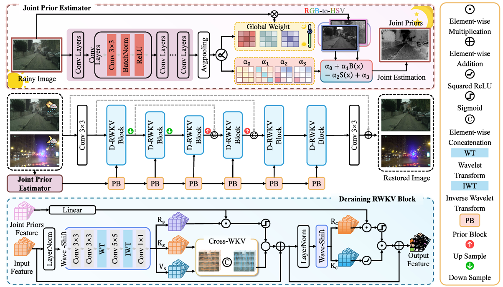
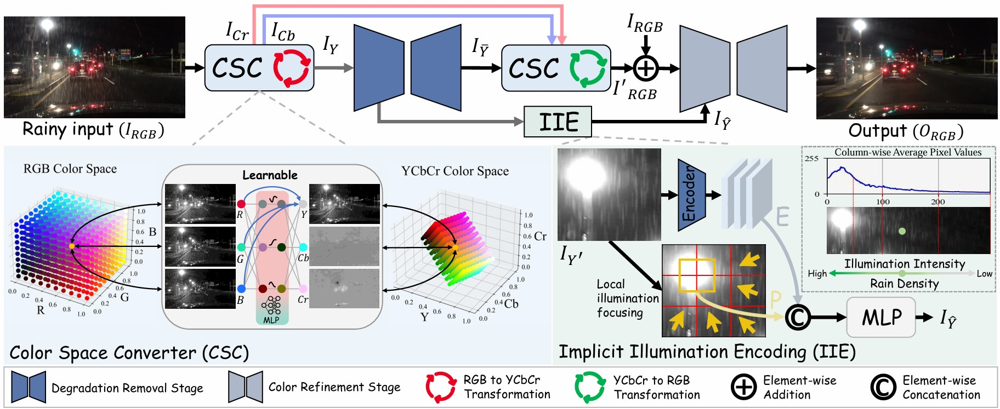
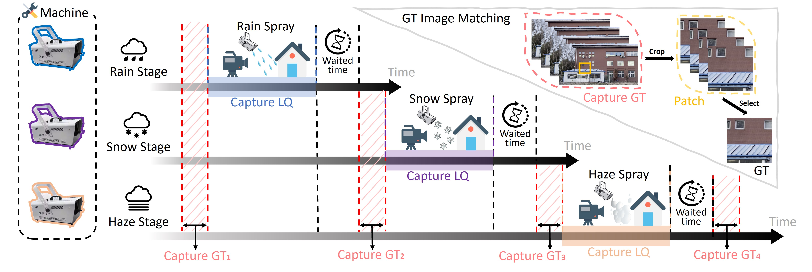
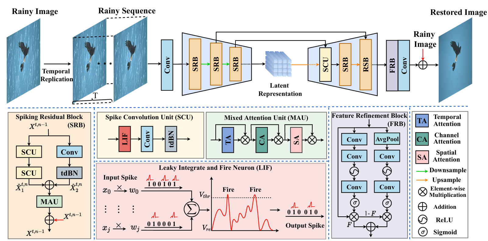

I am currently a Ph.D. student at the School of Computer Science and Engineering, Dalian Maritime University (DLMU), under the supervision of Prof. Hongbo Liu. My research interests lie in computer vision, with a primary focus on low-level image restoration. I am also a co-founder of the low-level vision community platform. If you are interested in my work, please feel free to contact me.
 |
Unifying day and night: Towards all-time image deraining via joint prior representation learning
Tianyu Song^,Shumin Fan, Xiang Chen, Naiyao Wang, Hongbo Liu*, Ruili Wang*
Expert Systems with Applications (ESWA), 2026.
[Paper]
[Code]
|
 |
Rethinking Nighttime Image Deraining via Learnable Color Space Transformation
Qiyuan Guan^, Xiang Chen^, Guiyue Jin*, Jiyu Jin*, Shumin Fan, Tianyu Song, Jinshan Pan
Annual Conference on Neural Information Processing Systems (NeurIPS), 2025.
[Paper]
[Code]
|
 |
WeatherBench: A Real-World Benchmark Dataset for All-in-One Adverse Weather Image Restoration
Qiyuan Guan^, Qianfeng Yang^, Xiang Chen^, Tianyu Song, Guiyue Jin*, Jiyu Jin
ACM International Conference on Multimedia (ACM MM), 2025 (Datasets Track).
[Paper]
[Code]
|
 |
Learning A Spiking Neural Network for Efficient Image Deraining
Tianyu Song^,Guiyue Jin, Pengpeng Li, Kui Jiang, Xiang Chen, Jiyu Jin*
International Joint Conference on Artificial Intelligence (IJCAI), 2024.
[Paper]
[Code]
|
Professional Services
Journal Reviewer:
- Pattern Recognition (PR)
- Expert Systems with Applications (ESWA)
- Knowledge-Based Systems (KBS)
- IEEE Transactions on Instrumentation & Measurement (TIM)
- International Journal of Digital Earth
- Geoscience and Remote Sensing Letters (GRSL)
- Computer Vision and Image Understanding (CVIU)
Conference Reviewer:
- CVPR Conference on Computer Vision and Pattern Recognition (CVPR 2025-2026)
- ICLR Conference on Learning Representations (ICLR 2024-2027)
- ICML Conference on Machine Learning (ICML 2026)
- NeurIPS Conference on Neural Information Processing Systems (NeurIPS 2024-2025)
- AAAI Conference on Artificial Intelligence (AAAI 2026-2027)
- ACM MM Conference on Multimedia (ACM MM 2024-2026)
- IEEE International Conference on Acoustics, Speech and Signal Processing (ICASSP 2026-2027)
- International Joint Conference on Neural Networks (lJCNN 2025)
- IEEE World Congress on Computational Intelligence (WCCI 2026)
Collaborators